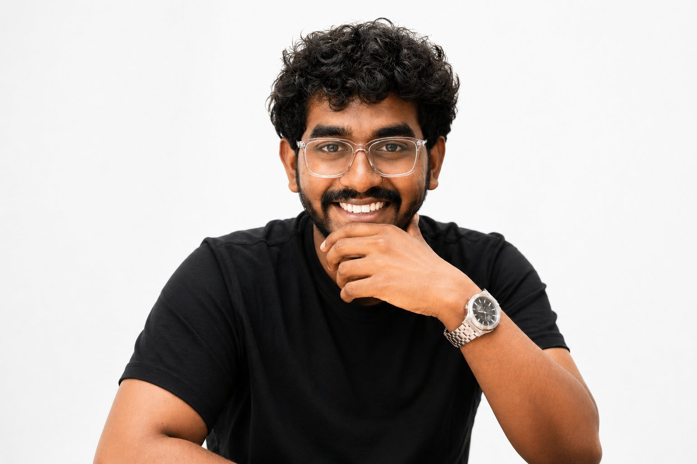

Brand Identity
Distinct visual identities and flexible brand systems—from art direction and design language to packaging that works on shelf and screen.

I design digital experiences — as a Creative Designer, I shape brand identity, packaging, and product interfaces across static and motion work.
Services
Distinct visual identities and flexible brand systems—from art direction and design language to packaging that works on shelf and screen.
User-centred interfaces and expressive digital design for products, platforms, and campaign moments—built to feel intuitive and memorable.
Static-to-motion visual systems that bring stories to life, creating consistency and impact across social, campaigns, and product touchpoints.